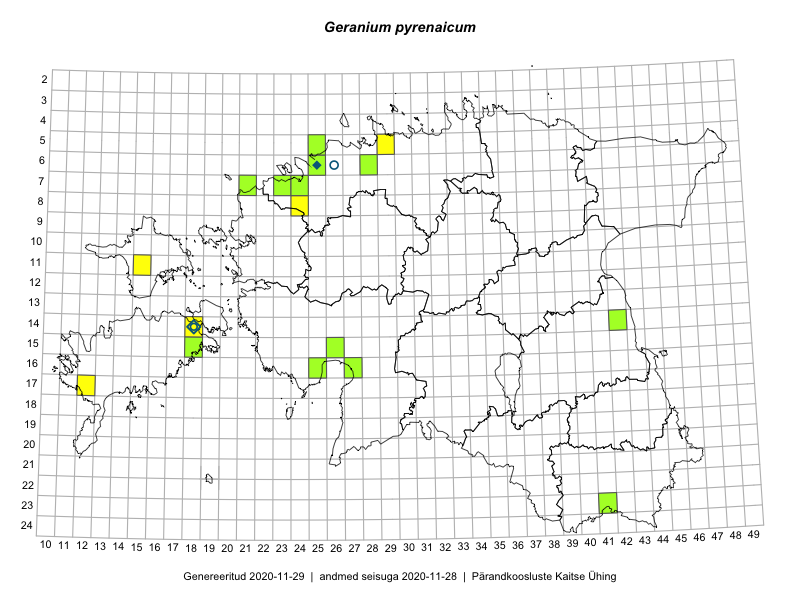

Geranium pyrenaicum — pürenee kurereha
Geraniaceae :: Geranium pyrenaicum Burm.f. (43)

Kaart põhineb 43 kirjel:
vaatlusi 8
herbaareksemplare 35
Taime kaasaegsed ja ajaloolised leiukohad asuvad 16 ruudus.
Tingmärgid ja ruutude arvud periooditi (U1 / V2 )
█ 2006–2020 (15/–)
◆/◇ 1971–2005 (2/2)
○ 1921–1970 (2/0)
+ kuni 1920 (0/0)
× hävinud (–/0)
? kaheldav (–/0)
| Ruut | Leidja(d) | Leiuaeg | Kirje |
|---|---|---|---|
| 14-18 | Mari Reitalu | 1999 | ruut/ala: Geranium pyrenaicum Burm.f. |
| 08-24 | Sirje Lagle, Tõnu Ploompuu | 2015-08-18 | ruut/ala: Geranium pyrenaicum Burm.f. |
| 14-18 | Mari Reitalu | 2007-05-03–2007-08-23 | ruut/ala: Geranium pyrenaicum Burm.f. |
| 11-15 | Sander Laherand | 2019-06-23 | ruut/ala: Geranium pyrenaicum Burm.f. |
| 15-26 | Toomas Kukk, Indrek Tammekänd | 2019-06-05 | ruut/ala: Geranium pyrenaicum Burm.f. |
| 15-26 | Indrek Tammekänd | 2019-06-05 | ruut/ala: Geranium pyrenaicum Burm.f. |
| 15-26 | Indrek Tammekänd | 2019-06-05 | ruut/ala: Geranium pyrenaicum Burm.f. |
| 17-12 | Mari Reitalu | 2019-12-08 | ruut/ala: Geranium pyrenaicum Burm.f. |
| 06-25 | Maret Kask, Linda Viljasoo | 1978-09-13 | TAA0080949: Geranium pyrenaicum Burm.f. |
| 06-25 | Maret Kask, Linda Viljasoo | 1978-09-13 | TAA0080950: Geranium pyrenaicum Burm.f. |
| 06-25 | Maret Kask, Linda Viljasoo | 1978-09-13 | TAA0080951: Geranium pyrenaicum Burm.f. |
| 14-18 | Linda Viljasoo | 1959-06-18 | TAA0080954: Geranium pyrenaicum Burm.f. |
| 14-18 | Linda Viljasoo | 1959-06-18 | TAA0080955: Geranium pyrenaicum Burm.f. |
| 14-18 | Linda Viljasoo | 1959-06-18 | TAA0080956: Geranium pyrenaicum Burm.f. |
| 14-18 | Toomas Kukk | 1999-07-06 | TAA0080957: Geranium pyrenaicum Burm.f. |
| 14-18 | Toomas Kukk | 1999-07-06 | TAA0080958: Geranium pyrenaicum Burm.f. |
| 06-25 | J.-M. Habicht | 2008-07-03 | TAM0014496: Geranium pyrenaicum Burm.f. |
| 07-21 | J.-M. Habicht | 2010-06-15 | TAM0020985: Geranium pyrenaicum Burm.f. |
| 06-25 | Tõnu Ploompuu | 1992-06-17 | TALL C005591: Geranium pyrenaicum Burm.f. |
| 14-42 | Peedu Saar, Ott Luuk | 2015-06-21 | TAA0135356: Geranium pyrenaicum Burm.f. |
| 14-42 | Peedu Saar, Ott Luuk | 2015-06-21 | TAA0135357: Geranium pyrenaicum Burm.f. |
| 15-18 | Hannes Pehlak, Mari Reitalu | 2016-08-26 | TAA0137778: Geranium pyrenaicum Burm.f. |
| 15-18 | Hannes Pehlak, Mari Reitalu | 2016-08-26 | TAA0137779: Geranium pyrenaicum Burm.f. |
| 15-18 | Hannes Pehlak, Mari Reitalu | 2016-08-26 | TAA0137780: Geranium pyrenaicum Burm.f. |
| 15-18 | Hannes Pehlak, Mari Reitalu | 2016-08-26 | TAA0137781: Geranium pyrenaicum Burm.f. |
| 07-23 | Jaak-Albert Metsoja | 2016-06-30 | TAA0134100: Geranium pyrenaicum Burm.f. |
| 23-41 | Ott Luuk | 2016-06-15 | TAA0138911: Geranium pyrenaicum Burm.f. |
| 23-41 | Ott Luuk | 2016-06-15 | TAA0138912: Geranium pyrenaicum Burm.f. |
| 23-41 | Ott Luuk | 2016-06-15 | TAA0138913: Geranium pyrenaicum Burm.f. |
| 23-41 | Ott Luuk | 2016-06-15 | TAA0138914: Geranium pyrenaicum Burm.f. |
| 06-25 | Toomas Kukk, Sander Laherand | 2016-07-05 | TAA0139542: Geranium pyrenaicum Burm.f. |
| 06-25 | Toomas Kukk, Sander Laherand | 2016-07-05 | TAA0139564: Geranium pyrenaicum Burm.f. |
| 06-25 | Toomas Kukk, Sander Laherand | 2016-07-05 | TAA0139565: Geranium pyrenaicum Burm.f. |
| 05-25 | Jaak-Albert Metsoja | 2015-05-30 | TAA0140473: Geranium pyrenaicum Burm.f. |
| 14-42 | Ott Luuk, Peedu Saar | 2015-06-21 | TAA0142499: Geranium pyrenaicum Burm.f. |
| 15-26 | Indrek Tammekänd | 2017-09-07 | TAA0143734: Geranium pyrenaicum Burm.f. |
| 15-26 | Indrek Tammekänd | 2017-09-25 | TAA0143735: Geranium pyrenaicum Burm.f. |
| 15-26 | Indrek Tammekänd | 2017-07-07 | TAA0143739: Geranium pyrenaicum Burm.f. |
| 16-25 | Indrek Tammekänd | 2018-06-02 | TAA0147677: Geranium pyrenaicum Burm.f. |
| 15-26 | Indrek Tammekänd | 2018-05-23 | TAA0147820: Geranium pyrenaicum Burm.f. |
| 06-28 | Thea Kull | 2019-06-13 | TAA0148021: Geranium pyrenaicum Burm.f. |
| 07-24 | Ott Luuk, Peedu Saar | 2019-09-05 | TAA0152379: Geranium pyrenaicum Burm.f. |
| 06-26 | L. Pihlapuu | 1962-08-23 | TU301330: Geranium pyrenaicum Burm.f. |
Ruutude arv uue atlase andmekogu järgi. Muuhulgas arvestab vanemat herbaariumi, 2005. aasta atlase välitöölehtedelt uuesti digitaliseeritud andmeid jne. Uue atlase andmekogust pärinevad andmed on kaardile kantud siniste sümbolitega.↩︎
Ruutude arv 2005. aasta atlase (Kukk, T., Kull, T., Eesti taimede levikuatlas. Eesti Maaülikool, Põllumajandus- ja Keskkonnainstituut, Tartu, 2005) järgi. Andmeallikana on kasutatud levik.exe programmi, kus igas ruudus on registreeritud vaid uusim leid. Seetõttu on vanemate perioodide kohta andmed puudulikud. Kasutatud levik.exe andmestikus leidub mõningaid kõrvalekaldeid atlase trükis ilmunud versioonist, sagedamini tarnade ja käpaliste seas. Lisaks leidub selles andmestikus valik liike (peamiselt väheste leidudega tulnuktaimed), mille kaarte trükis ei avaldatud. Vana atlase andmed ruutudest, milles ei ole uue atlase andmekogus leide enne 2006. aastat, on kaardil esitatud punaste sümbolitega. Vana atlase andmetel hävinud ja kaheldavaid leiukohti pole hilisemate (taas)leidude põhjal korrigeeritud.↩︎